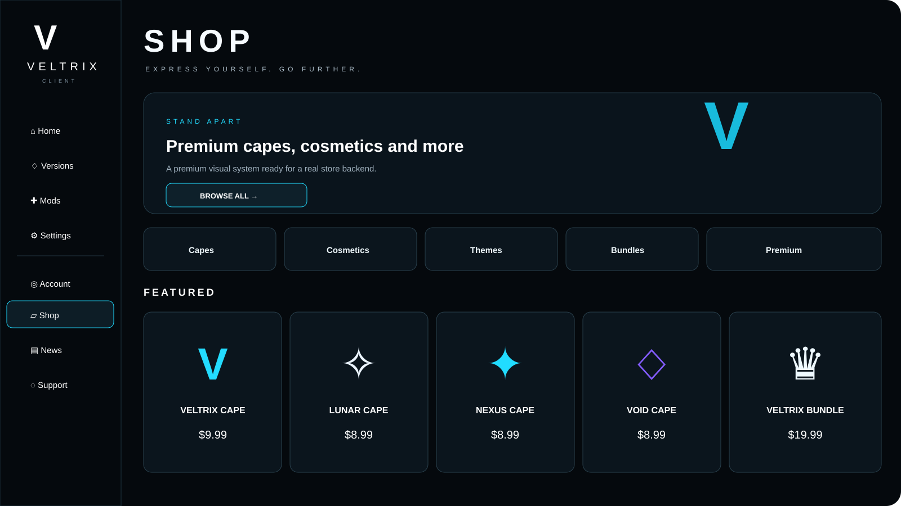
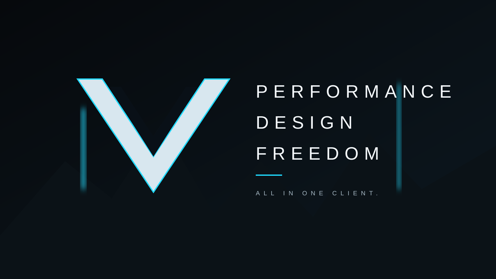

Performance
Focused launcher flow with a fast, clean interface.
Minecraft Java Edition
Play different Minecraft versions, manage your setup and keep everything inside one modern launcher experience.
Focused launcher flow with a fast, clean interface.
Dark metallic VELTRIX styling with cyan accents.
Versions, mods and launcher settings in one place.
Designed around multiple Minecraft Java versions.
Official sign-in flow; Minecraft Services approval remains pending.
Version metadata, assets, libraries and game launch pipeline.
The new VELTRIX look
The new design uses the same dark world, metallic V logo and ice-blue highlights across the client and the public site.

Hero launch area, account status and the main play controls.
Matching premium store styling ready for a real cosmetics backend.
The real Minecraft profile name is shown after successful verification.

Store concept
Premium cards, cyan detail lighting and the same launcher navigation language.

VELTRIX identity
A single recognizable brand across launcher, website and future releases.
Latest news
Loaded from the existing VELTRIX news feed.
VELTRIX Client 0.8.2
Download the current Windows installer. The launcher contains the startup diagnostics and Windows startup fix from the 0.8.2 release.